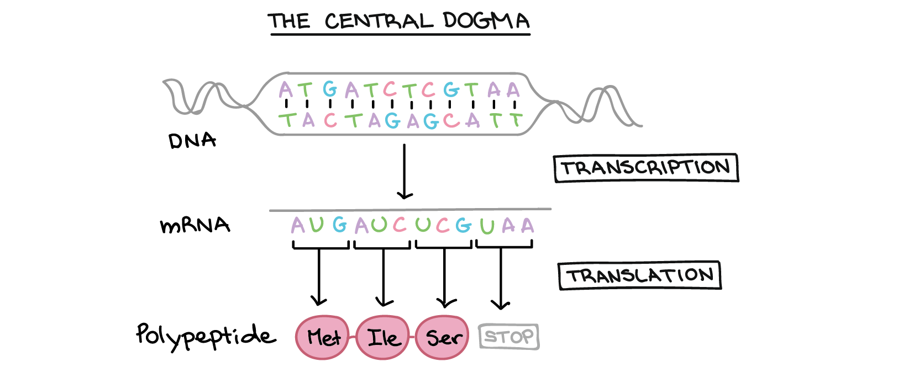

Understanding how organisms develop, function, and behave fundamentally begins with the genome. The genome encodes the biological instructions that govern everything from embryonic development to physiological function and, in some cases, susceptibility to disease. It reflects both our evolutionary history and the genetic material we pass on to future generations. As such, the genome represents the most information-dense blueprint of biological identity.

At a molecular level, genetic information is stored in DNA, a double-stranded helical structure composed of nucleotide base pairs. During gene expression, DNA is transcribed into a single-stranded molecule known as RNA. This RNA is then read in groups of three nucleotides, called codons, each of which corresponds to one of twenty amino acids. These amino acids are sequentially linked to form proteins, which serve as the primary functional units within biological systems. A significant proportion of observable biological structures such as hair, muscle, and skin are composed largely of proteins. Moreover, proteins act as enzymes that catalyze the synthesis of carbohydrates, fats, and other complex molecules, and they regulate the storage and release of these compounds within the body. In short, genes encode proteins, and proteins largely determine biological form and function.
Because genes play a central role in maintaining health and biological stability, disruptions in the genome can substantially increase the likelihood of disease. Many genetic disorders arise not from single mutations, but from complex interactions among multiple genetic variants. Genome-Wide Association Studies (GWAS) aim to identify statistical associations between specific genetic variations most commonly single nucleotide polymorphisms (SNPs) and particular traits or disorders. While GWAS have successfully mapped thousands of SNPs to diseases, the biological interpretation of these results remains challenging, especially since most disorders are influenced by combinations of variants rather than isolated SNPs.
While genes often influence our likelihood of specific diseases, it can be difficult to attribute specific genes to specific diseases. This is especially the case when groups of genes (referred to as gene modules) are responsible for a specific disease. As a result, network representations of gene co-expression becomes a meaningful tool in understanding the roles of gene modules and disease. Many papers and methodologies have been used to find important gene modules. Here, we will explore if we can use those methodologies to allow users to identify gene modules and find targets for their own research.
In the last decade, the GTEx consortium has compiled gene expression values by sequencing RNA (via bulk RNA-seq) for a large selection of tissue samples. To quantify how actively any given gene is being expressed in a tissue, GTEx reports expression levels in units of transcripts per million (TPM). TPM is calculated by first counting the number of RNA sequencing reads that map to a given gene, normalizing for the length of that gene (since longer genes naturally capture more reads), and then scaling the result so that all values within a sample sum to one million. This normalization strategy makes TPM values directly comparable across both genes and samples: a gene with a TPM of 100 in liver tissue and a TPM of 1 in brain tissue is being transcribed at substantially higher levels in the liver, indicating that it is more actively expressed there. A gene with near-zero TPM across all tissues is considered transcriptionally silent or lowly expressed, while genes with high TPM values in specific tissues are considered tissue-enriched or tissue-specific markers. Critically, because TPM normalizes within each sample, it does not reflect the absolute number of RNA molecules but rather the relative proportion of transcriptional activity devoted to a given gene in that tissue at the time of sampling.
The GTEx v8 dataset, as described in the consortium's landmark 2020 publication in Science, encompasses 15,201 RNA-sequencing samples from 49 tissues of 838 postmortem donors, with each tissue's mRNA sequenced to a median depth of 82.6 million reads, from which gene expression and splicing were quantified from bulk RNA-seq of heterogeneous tissue samples. By aggregating these TPM-level expression profiles across dozens of tissues and hundreds of individuals, GTEx provides a comprehensive reference atlas of where and how much each gene is expressed across the human body. This resource is particularly powerful for interpreting GWAS findings: when a SNP is associated with a disease, researchers can consult GTEx to determine whether that SNP coincides with a region that regulates gene expression in a disease-relevant tissue which are a class of variants known as expression quantitative trait loci (eQTLs). The GTEx project was established to characterize genetic effects on the transcriptome across human tissues and to link these regulatory mechanisms to trait and disease associations, and the v8 analysis comprehensively characterizes genetic associations for gene expression and splicing in cis and trans, showing that regulatory associations are found for almost all genes. In doing so, GTEx bridges the gap between statistical genetic associations and the underlying molecular biology, enabling researchers to move from a list of disease-associated SNPs toward a mechanistic understanding of how those variants alter gene activity and, ultimately, biological function.
With a dataset of this scale and resolution, the challenge shifts from data availability to interpretation: how do we surface meaningful gene relationships from hundreds of thousands of pairwise expression signals? That question motivates the network construction approach described below.
Methodology
To create a co-expression network, we must begin by gaining an understanding of how genes co-express. We can calculate pairwise correlation coefficients over all tissue types and use those signals to inform whether a link should exist. Networks built on these cascading signals are often noisy and contain too much information. Existing techniques have their own drawbacks. For example, Weighted Gene Co-Expression Analysis (WCGNA) enforces connectivity constraints in order to exhibit power law distributions. Unweighted approaches lead to noisy data with many false positives. In order to address some of these issues, the writers of the MEGENA paper adopted a network embedding paradigm on a topological sphere. Planar Maximally Filtered Graph (PMFG) was developed to extract most relevant information from similarity matrices based on topological sphere and has been applied mostly in financial domains. PMFG becomes an ideal platform to construct co-expression networks due to the following attractive features: i) the preservation of hierarchy by retaining Minimum Spanning Tree (MST) as a subgraph, ii) the correspondence between a coherent cluster (if any) and a connected subnetwork, iii) the abundance of 3- and 4-cliques and exhibition of rich clustering structures.
While PMFG serves as an effective tool, the enforcement of connectivity and edge creation based on correlation criteria will still lead to false positives. To deal with this, the authors created an analysis framework named Multiscale Embedded Gene Co-expression Network Analysis (MEGENA).
Fast Planar Filtered Network construction (FPFNC): Rather than the traditional PMFG algorithm, the authors introduce parallelization, early termination and prior quality control to effectively generate a PMFG over all tissue types.